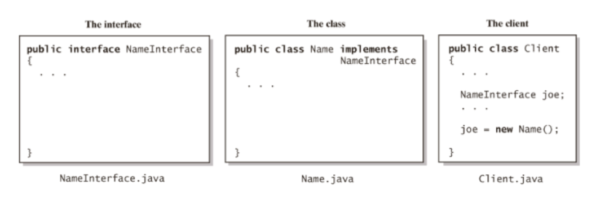
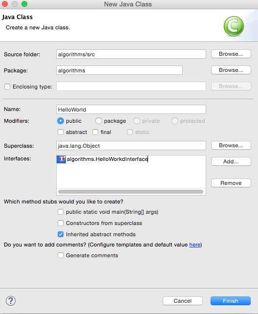
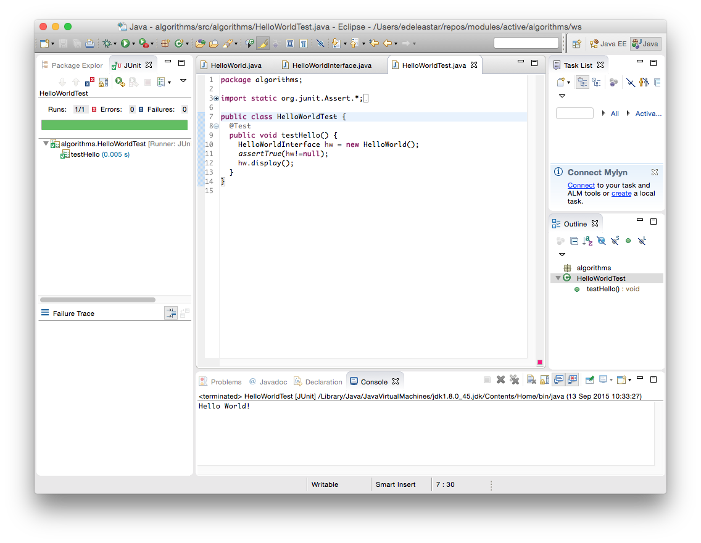

Workspaces and Interfaces
- Understand workspaces in Eclipse
- Understand Java Interfaces paradigm
- Specify an Interface
- Implement the Interface
- Use of Interface/Implementation in a Client Object
Workspaces in Eclipse
A workspace is a logical collection of projects. A workspace is a directory on your hard drive where Eclipse stores the projects that you define to it. When you specify this directory name to Eclipse, Eclipse will create some files within this directory to manage the projects. This becomes the standard location for your Eclipse working directory
On this startup screen, Eclipse prompts you for the location of the workspace. Create a directory on a USB drive or a network share and use this as your workspace for ALL subsequent Algorithms work

Substitute in your own specific workspace path in the above as necessary
The following recommendation is made:
- Create a directory just for the workspace outside of the Eclipse install directory, on a persistent and portable location
- E.g. H:\eclipse_workspace
- Use that directory as your one and only workspace to manage most of your projects.
- Specify that directory each time you startup Eclipse
- If you are using Eclipse on your own laptop, set this as the default (option available on startup)
For all subsequent labs, it is assumed that:
- You are using the same workspace
- All previous labs have been completed
- Any supplementary libraries are available (you will be informed when these are needed)
- Your code is working correctly
- If you have difficulty with this, please inform your tutors immediately
Java Interfaces
A program component that contains - Public constants - Signatures for public methods - Comments that describe them
Begins like a class definition - but use the word interface instead of class
public interface someClass
{
public int someMethod();
}
Interface Paradigm:

The files for an interface, a class that implements the interface, and the client.
Create a new project
Open Eclipse
Set your workspace to your persistent area (memory stick, network drive) Wherever you created your workspace last time!
Create a new Project called algorithms
Select File - >New -> Project -> Java Project
Eclipse: create a new package
Inside the algorithms project, create a new package, also called algorithms

Eclipse: Create an Interface
In the algorithms package, create a new interface, called HelloWorldInterface
Right-click on algorithms Package and Select New –> Interface
Eclipse: Specifying a method
Next, we shall specify a method display() in the Interface. Recall interfaces only identify methods, and do NOT implement them (a WHAT operation)
Add the following line to your interface, so that it resembles:
public interface HelloWorldInterface
{
public void display();
}
Implementing the Interface
Next we will create a class HelloWorld that implements HelloWorldInterface. In the algorithms package, create a new class called HelloWorld (do not press OK)
In the Interfaces box on the class creation dialogue, add the HelloWorldInterface

Click OK
You’ll see that Eclipse will generate interface methods for you
Add a String data attribute hello to HelloWorld
Create a default constructor that initialises hello to “Hello World!”
Implement the display() method so that it prints “Hello World” to the screen
public class HelloWorld implements HelloWorldInterface {
private String hello;
public HelloWorld() {
hello = "Hello World!";
}
public void display() {
System.out.println(hello);
}
}
Testing the Interface
Next we will create a JUnit test, to test the Interface/Implementation.
In the algorithms package, create a new JUnit test by selecting File->New->JUnit Test and call it HelloWorldTest.
Modify HelloWorldTest to perform the following test (I have not included the JUnit import statements)
public class HelloWorldTest {
@Test
public void testHello() {
HelloWorldInterface hw = new HelloWorld();
assertTrue(hw!=null);
hw.display();
}
}
Next we will run HelloWorldTest. Right click on HelloWorldTest and select Run – JUnit Test

Creating a Client
In algorithms, create a new class called HelloWorldClient
Add a main function to HelloWorldClient, such that it resembles: package algorithms;
public class HelloWorldClient {
public static void main(String[] args) {
HelloWorldInterface hw = new HelloWorld();
hw.display();
}
}
Running the Client
Execute HelloWorldClient as a Java Application by right-clicking on HelloWorldClient and select Run as -> Java Application
You should see “Hello World!” displayed in the Eclipse console.
Java Interfaces
Congratulations! You have now successfully:
- Set up your workspace
- Created an Interface
- Implemented that interface
- Created JUnit tests for interface/implementation
- Created a client that uses the interface/implementation